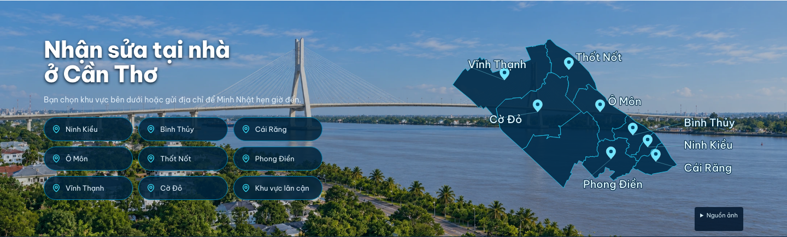
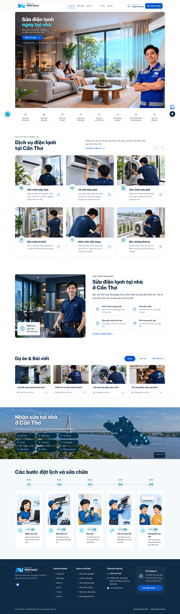
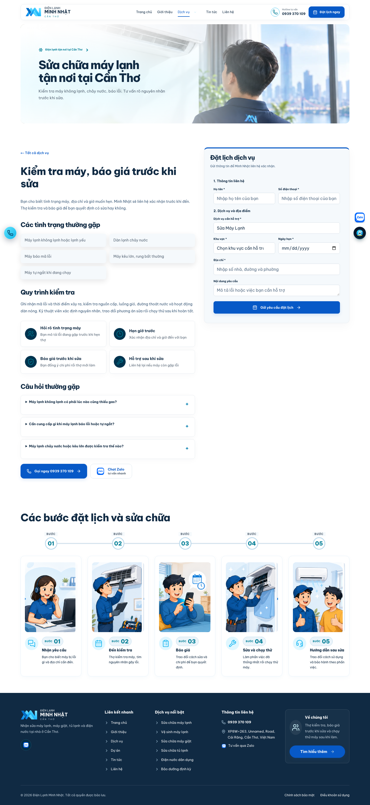

Khu vực phục vụ — ảnh nền buổi sáng
Giữ nguyên bố cục và cơ chế tương tác ban đầu; chỉ thay ảnh nền mặc định sang buổi sáng. Thử chọn khu vực

TrắngXanh băngNavyXanh hành độngTeal
01 · Giới thiệu
Dải thông tin navy nổi bật, nội dung trên nền trắng, khu vực ảnh đội ngũ nền xanh băng. Bấm ảnh để xem kích thước đầy đủ.
02 · Trang chủ
Giảm nền xanh và tiêu đề nhiều màu; ảnh, nội dung và nút đặt lịch dễ phân biệt hơn.
Phối màu mới
03 · Chi tiết dịch vụ
Nội dung nền trắng, biểu mẫu xanh băng với viền nhấn xanh dương, footer navy thống nhất.
Phối màu mới